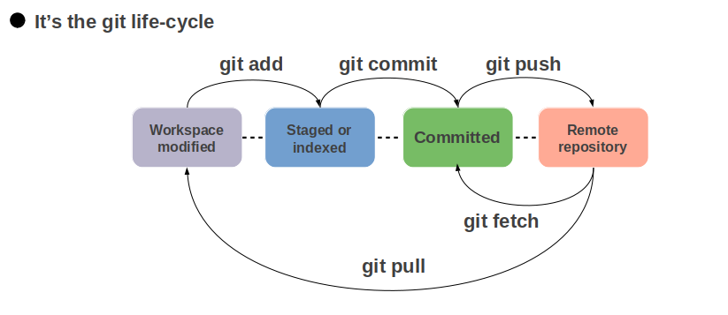

Introduction
If you have gotten to the point in your coding adventure where you have started saving code files on your computer, you ought to study git bash and GitHub asap!
The earlier you analyze these subjects, the earlier you can ensure the safety of your code, the earlier you can get used to version management (which software program builders use all the time on the activity).
About Git
Git is the free and open source distributed version control system (dvcs), that is responsible for everything GitHub
related that happens locally on your computer. This cheat sheet features the most important and commonly
used Git commands for easy reference.
What is a repository
A repository is simply a database containing all the information needed to retain and manage the revisions and history of a project. Within a
repository, Git maintains two primary data structures, the object store and the index.
The object store is designed to be efficiently copied during a clone operation as part of the mechanism that supports a fully DVCS.
Index is transitory information , is private to a repository and can be created or modified on demand as needed.
Configure Git
To start using Git from your computer, you must enter your credentials (user name and email) to identify you as the author of your work. The user name and email should match the ones you’re using on GitHub.
In your shell, add your user name:
- git config --global user.name "your_username"
And your email address:
- git config --global user.email "your_email_address@example.com"
To check the configuration, run:
- git config --global --list
Note - The --global option tells Git to always use this information for anything you do on your system. If you omit --global or use --local, the configuration is applied only to the current repository.- (Read More)
Git authentication methods
To connect your computer with GitHub, you need to add your credentials to identify yourself. You have two options:
- Authenticate on a project-by-project basis through HTTPS, and enter your credentials every time you perform an operation between your computer and GitHub.
-
Authenticate through SSH once and GitHub no longer requests your credentials every time you pull, push, and clone.
To start the authentication process, we’ll clone an existing repository to our computer:
- If you want to use SSH to authenticate, follow the instructions on the SSH documentation to set it up before cloning. -> Setup
Note: - If you have GitHub Desktop installed, you can use it to clone repositories and not deal with SSH keys.
- If you want to use HTTPS, GitLab requests your user name and password:
- If you have 2FA enabled for your account, you must use a Personal Access Token with read_repository or write_repository permissions instead of your account’s password. Create one before cloning.
- If you don’t have 2FA enabled, use your account’s password.
About GitHub
#No coding necessary
GitHub is a code hosting platform for version control and collaboration. It lets you and others work together on projects from anywhere.
The part of using GitHub is just --- you need a GitHub.com account and Internet access.
You don’t need to know how to code, use the command line, or install Git (the version control software GitHub is built on).
Step 1. Create a Repository
A repository is usually used to organize a single project. Repositories can contain folders and files, images, videos, spreadsheets, and data sets – anything your project needs.
We recommend including a README, or a file with information about your project.
GitHub makes it easy to add one at the same time you create your new repository. It also offers other common options such as a license file.
Your "hello-world" repository can be a place where you store ideas, resources, or even share and discuss things with others.
To create a new repository
- In the top right corner, previous to your avatar or Profile Photo, click and then select New repository.
- Name your repository hello-world.
- Write a short description. (Optional)
- Select Initialize this repository with a README.

Initial Setup and Git Commands
- Initialize a repo: - Create an empty git repo or reinitialize an existing one
- Clone a repo: - Clone the hello-word repo into a new directory called hello-word
- $ git clone https://github.com//hello-word.git
- Setup Remotes: - First, let's see a list of the repositories (remotes) whose branches you track:
Note: - If the above command show nothing, then we haven't setup upstream.
- git remote add upstream https://github.com//.git
- Branching: - When working on a fork, you could be switching between different branches quite commonly. As such, you generally want to stay off the master branch and work on your own feature branches so that master is always clean and you can base new branches off of it.
- To create a new branch...
- $ git checkout -b 'branch-name'
- If you want to know what branches are available in your working directory? Simply run: -
- $ git branch
(This will show you all the branches belong to that repo.)
- To switch/jump to an existing branch...
- $ git checkout 'branch-name'
- Status: - Not sure if you're working on a clean branch? Want to see what files have changed? Git status will show you a report.
- Staging Changes: - Now that you've added or modified some files, you need to stage those commits into "the staging area." Think of git commits like an array of airlock hatches on a space ship. On this space ship, you can only open the door to one airlock at a time.
When you open the hatch, you can put stuff in or take stuff out at will. Not until you've closed the door have you committed those changes (git commit) and not until you hit the red button do all those hatches open up into space (git push).
You can stage inidividual files or all files at once.
- $ git add firstfile.py
(For a prticular file.)
- $ git add .
(for all files.)
- Unstaging Changes / Restoring Files: - Maybe you accidentally staged some files that you don't want to commit.
- $ git restore firstfile.py
(For a prticular file.)
- $ git restore .
(for all files.)
- Commits: - Commit often. You can always squash down your commits before a push.
- $ git commit -m "Updated README"
Want to automatically stage files that have been modified and deleted, but new files you haven't told git about will be unaffected? Pass the -a or --all option flag:
- $ git commit -am "Updated README"
- Undoing Commits: - The following command will undo your most recent commit and put those changes back into staging, so you don't lose any work:
- $ git reset --soft HEAD~1
The next one will completely delete the commit and throw away any changes. Be absolutely sure this is what you want:
- git reset --hard HEAD~1
- Squashing Commits: - Maybe you have 4 commits, but you haven't pushed anything yet and you want to put everything into one commit so your boss doesn't have to read a bunch of garbage during code review.
- $ git rebase -i HEAD~4
- Note: - By doing this, An interactive text file is displayed. You'll see the word "pick" to the left of each commit. Leave the one at the top alone and replace all the others with "s" for squash, save and close the file. This will display another interactive window where you can update your commit messages into one new commit message. I like to use "f" instead of "s", because I usually work in such a way that I name my first commit appropriately from the get-go. "f" just skips the 2nd interactive file and uses the first commit message.
- Pushing: - Push a local branch for the first time:
- $ git push --set-upstream origin
- $ git push
- Imp: - Undo Last Push: - Some would say this is bad practice. Once you push something you shouldn't overwrite those changes. Instead, you're supposed to create a new commit that reverts the changes in the last one. So, technically, you shouldn't do this, but... you can?
- $ git reset --hard HEAD~1 && git push -f origin master
- Fetching: - Fetch changes from upstream:
- $ git fetch upstream
- Note: - Fetch changes from both origin and upstream in the same shot:
- $ git fetch --multiple origin upstream
- Merging: - The git merge command lets you take the independent lines of development created by git branch and integrate them into a single branch.
- $ git fetch origin
- git merge origin/dev
- Pulling: - Pulling is just doing a fetch followed by a merge. If you know your branch is clean (e.g., master branch), go ahead and get the latest changes. There will be no merge conflicts as long as your branch is clean.
- Rebasing: - Rebasing is a way of rewriting history. In place of merge, what this does is stacks your commits on top of commits that are already pushed up. In this case, you want to stack your commits on top of origin/dev
- $ git fetch origin
- git rebase origin/dev
- Note: - If you already have a local branch set to track dev then just do:
- $ git rebase dev
- Note: - Would you like to fetch, merge and then stack your changes on top, all in one shot? You can! If you have tracking setup on the current branch, just do:
- $ git pull --rebase
- Note: - Another great use of rebasing is just rewriting commit messages. To get an interactive text editor for the most recent commit, do:
- $ git rebase -i HEAD~1
- Deleting Branches: - Delete a local branch:
- $ git branch -d < local_branch >
- Note: - Delete a remote branch on origin:
- $ git push origin :
- Stashing: - Sometimes you need to stash your changes so you can be on a clean branch or maybe because you want to go back and try something before you make a commit with these changes. Here's how you do a stash:
- $ git git stash
- Note: - Now, if you want to unstash those changes and bring them back into your working directory:
- $ git stash pop
- Note: - Or maybe you want to unstash your changes without popping them off the stack. In other words, you might want to apply these stashed changes multiple times. To do this:
- $ git stash apply
- Note: - For a list of stashes:
- $ git stash list
- Note: - And to apply a specific stash from that list (e.g., stash@{3}):
- $ git stash apply stash@{3}
SSH Setup
Generating a new SSH key
- Open Git Bash.
- Paste the text below, substituting in your GitHub email address.
- $ ssh-keygen -t ed25519 -C "your_email@example.com"
Note: - This creates a new ssh key, using the provided email as a label.
> Generating public/private ed25519 key pair.
- When you're prompted to "Enter a file in which to save the key," press Enter. This accepts the default file location.
- > Enter a file in which to save the key (/c/Users/you/.ssh/id_ed25519):[Press enter]
- At the prompt, type a secure passphrase. For more information, see "Working with SSH key passphrases".
Note: - If you don't want to enter any pharse and want to go by default value. [Press enter] and [Press enter again]
or
- > Enter passphrase (empty for no passphrase): [Type a passphrase]
- > Enter same passphrase again: [Type passphrase again]
Adding your SSH key to the ssh-agent
- Ensure the ssh-agent is running:
- Add your SSH private key to the ssh-agent. If you created your key with a different name, or if you are adding an existing key that has a different name, replace id_ed25519 in the command with the name of your private key file.
- $ ssh-add ~/.ssh/id_ed25519
That's it, you're ready to go. The only thing is to add it to you GitHub Account.
Adding a new SSH key to your GitHub account
- Copy the SSH public key to your clipboard.
If your SSH public key file has a different name than the example code, modify the filename to match your current setup. When copying your key, don't add any newlines or whitespace.
$ clip < ~/.ssh/id_ed25519.pub
# Copies the contents of the id_ed25519.pub file to your clipboard
- Now, open your GitHub Account --> click on Profile Photo, and then click on settings.
- In the user settings sidebar, click SSH and GPG keys.
- Click New SSH key or Add SSH key.
- In the "Title" field, add a descriptive label for the new key. For example, if you're using a Personal Laptop, you might call this key "Personal MSI Laptop".
- Paste your SSH key into the "Key" field.
- If prompted, confirm your GitHub password. Please do it.